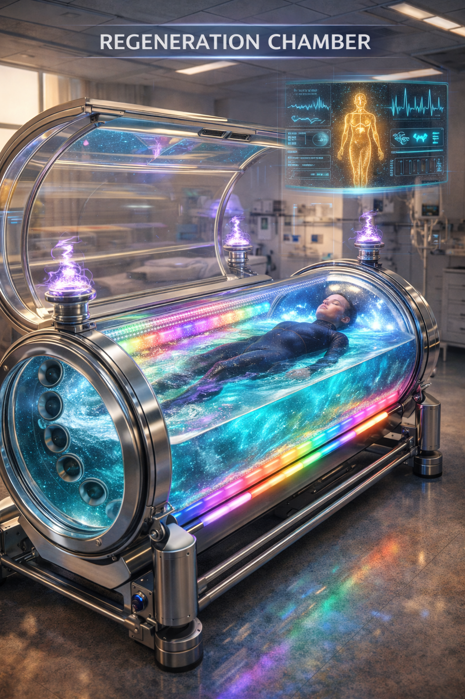

Clinical Disclaimer
Not FDA-approved. Nothing in this paper is a substitute for professional medical care. Consult your physician before beginning any protocol described here. Claims are organized by evidence tier (Section 15); Tier 3–4 mechanisms are explicitly speculative and require clinical validation before use.
Modern pharmacology operates almost exclusively within the material domain — molecules designed to bind receptors, inhibit enzymes, or alter metabolic pathways. This approach has not reversed the epidemic of chronic disease affecting the majority of adults in developed nations. Mineral deficiencies persist despite widespread supplementation, with oral bioavailability often below 30%.
This paper proposes that optimal therapeutic outcomes require addressing two orthogonal domains simultaneously: Matter (chemical structure, concentration, binding affinity) and Field (electromagnetic signature, coherence, frequency). It develops the theoretical foundation for Field–Matter Bridge therapeutics — interventions combining physical substances with coherent electromagnetic fields to enhance efficacy, reduce dosing requirements, and minimize adverse effects — and surveys the resulting technology family: the Bridge Device, the 7D Water Packet, the Regeneration Chamber Pharmacy Module, and their clinical applications.
Every hypothesis is stated in falsifiable form and ranked by evidence strength. Engineering schematics, manufacturing protocols, exact mineral concentrations, and the proprietary frequency-derivation formula are held as protected IP and are available to qualified partners under signed NDA.
1. The Chronic Disease Paradox
Medicine has never been more scientifically sophisticated, yet chronic disease prevalence continues to rise. In the United States, roughly 60% of adults have at least one chronic condition and 42% have two or more, with healthcare spending exceeding $4.1 trillion annually — chronic disease accounts for approximately 90% of that spend.
| Condition | Trend 2000–2020 |
|---|---|
| Type 2 Diabetes | +61% (10.3% → 16.6% of adults) |
| Hypertension | +11% (30.0% → 33.3%) |
| Depression | +33% (6.6% → 8.8%) |
| Chronic Pain | +25% (20.0% → 25.3%) |
This is not a failure of pharmaceutical chemistry — modern drug design is exquisitely precise. The proposed deeper issue: we are treating a multidimensional system (the living human organism) with a unidimensional intervention (molecules alone). In parallel runs a mineral deficiency epidemic — magnesium deficiency affects an estimated 45–60% of Americans, and the great majority of the population consumes less than the recommended daily potassium — despite a $50 billion global supplement industry. Deficiencies persist because oral bioavailability is poor, dosing is imprecise, minerals compete for absorption, and the electromagnetic field context of delivery is never considered.
2. The Field–Matter Hypothesis
Living organisms respond to two orthogonal domains — Matter and Field. Optimal therapeutic outcomes require addressing both simultaneously. Five hypotheses organize the framework:
- H1 — Minerals delivered in a coherent electromagnetic field environment are absorbed more efficiently than the same minerals delivered without field context.
- H2 — Specific low-frequency fields can pre-condition tissue to enhance mineral uptake.
- H3 — Structured water serves as a coherence-preserving carrier medium.
- H4 — A field-only intervention can partially compensate for mild mineral deficiency.
- H5 — Pharmaceutical side effects arise partly from field disruption and can be meaningfully reduced through field-targeted delivery.
Each is stated so that a negative result would be as informative as a positive one, and each is assigned an evidence tier in Section 15.
3. Matter as Coherence Locked in Form
Within the Christos™ Harmonic Framework, matter is treated as coherence that has condensed into stable form. Coherence (C) ranges from 1.0 (perfect phase-locking) to 0 (random incoherent noise), and different physical states sit at characteristic points on that spectrum — from pure field and plasma at the high end, through structured water and living tissue, down to inert, disordered matter.
3.1 Elements as Signal Regulators
The Christos™ Harmonic Periodic Table (HPT) classifies elements by functional role in biological signaling rather than by chemical group alone:
| HPT Category | Function | Examples | Clinical Relevance |
|---|---|---|---|
| Signal Initiators | Trigger action potentials | Na⁺, Ca²⁺, H⁺ | Nerve conduction, muscle contraction |
| Signal Stabilizers | Maintain resting states | K⁺, Mg²⁺, Li⁺ | Anxiolysis, cardiac stability |
| Signal Amplifiers | Enhance transmission | Cu, Fe, Co | Energy, oxygen transport |
| Noise Dampeners | Reduce oxidative chaos | Zn, Se, Mn | Immunity, oxidative stress |
| Fidelity Keepers | Maintain structure | I, B, Si | Thyroid, bone, connective tissue |
Protected IP — HPT Dimensional Frequency Values
The complete 4th-dimensional frequency assignment for each element and the 5th-dimensional coherence-class thresholds are proprietary to Joshua Farrior / Christos™ Energy, Technology & Harmonic Design Consulting, LLC and are not disclosed in this public version.
Full Specifications Available Under Signed NDA ↗4. Field as Coherence in Motion
The biofield is the measurable electromagnetic field generated by cardiac electrical activity (ECG), neural activity (EEG), ionic currents, mitochondrial proton flows, and coherent water dipole oscillations. The heart generates a field 40–60× stronger than the brain's, detectable several feet from the body. Heart Rate Variability (HRV) coherence — a narrow, high-amplitude spectral peak at 0.1 Hz — is supported by well over 100 published studies.
4.1 The 0.1 Hz Resonance
At roughly six breaths per minute, respiratory sinus arrhythmia synchronizes with baroreflex oscillations, creating a standing wave in the cardiovascular–respiratory system. Validated effects include increased vagal tone, decreased cortisol, increased DHEA and IgA, and improved cognitive performance. Published clinical trials report meaningful anxiety reduction, measurable systolic blood pressure reduction after 8 weeks, and PTSD improvement in veteran populations. This is field medicine — no molecules, only frequency.
4.2 The 40 Hz Gamma Precedent
Iaccarino et al. (2016, Nature) demonstrated that 40 Hz light-and-sound stimulation reduced amyloid-β substantially in mouse models by activating microglia, with human trials subsequently underway. This stands as the strongest existing peer-reviewed proof of concept for frequency-based disease intervention, and anchors the plausibility case for the broader framework.
5. The Toroidal Model of Matter–Field Interaction
The torus is treated as the fundamental geometry of coherent biological systems — every living cell, organ, and the body as a whole are modeled as nested toroidal systems. Matter is proposed to occupy the inner, slower, denser region (lower frequency, longer coherence times, information storage); field occupies the outer, faster region (higher frequency, shorter coherence times, information transmission). Structured water is proposed as the interface medium, coupling matter and field through the Exclusion Zone (EZ) phase at every membrane surface.
5.1 The Coherence Threshold
The framework's central pharmacological hypothesis is that coherence state (C) modulates drug efficacy: above an approximate threshold, drugs behave as intended; below it, regulatory systems degrade, side effects escalate, and response becomes unpredictable. Side effects are proposed to arise, in part, from a drug perturbing the biofield in non-target tissue. Field priming before medication — coherent breathing, targeted sound, or PEMF — is hypothesized to improve response and reduce side effects. This is stated as Hypothesis H5 above and requires the clinical validation outlined in Section 15.
6. The Potassium Template
Potassium was selected as the framework's founding case study because its physiology is exceptionally well characterized and its deficiency is nearly universal in the developed-world diet. Potassium performs three inseparable functions: repolarization of the cell membrane after each action potential, maintenance of intracellular hydration (each K⁺ ion draws roughly a dozen water molecules), and setting of the resting membrane potential that establishes the baseline for all downstream electrical signaling. Because these three functions are interdependent, the framework proposes that each has a field-based equivalent that can be engaged directly, independent of mineral intake:
| Potassium Function | Field Equivalent | Mechanism |
|---|---|---|
| Membrane repolarization | Baroreflex resonance (0.1 Hz paced breathing) | Vagal activation, HRV peak |
| Cellular hydration | Structured EZ water | Hexagonal lattice, negative surface charge |
| Signaling baseline | Coherence lock (C > 0.7) | Phase synchronization |
This template — map a mineral's physiological functions, identify a field-based equivalent for each, and test whether the field intervention can substitute for or enhance the mineral — is the pattern applied across the rest of the framework and the anchor design for Clinical Trial 1 (Section 17).
7. The 7th-Dimensional Water Packet
In the Christos™ framework, dimensions are treated as coherence bands — frequency octaves and levels of informational density, not spatial dimensions. Ordinary physical matter sits at low coherence (C ≈ 0.1–0.4); the proposed 7th dimension sits at high coherence (C ≈ 0.90–0.95) and is described as the library of pure informational templates for every element and nutrient. The 7D Water Packet is the delivery vehicle that brings those templates into physical form, using water as a carrier because of its established capacity to hold both dissolved matter and structured information — a claim grounded in Gerald Pollack's peer-reviewed work on Exclusion Zone (EZ) water at the University of Washington.
7.1 The Seven Layers (Conceptual Overview)
| Dimension | Content | Purpose |
|---|---|---|
| 1D — Physical Matter | Minerals in ionic form | Chemical substrate |
| 2D — Water Structure | EZ water | Coherent carrier |
| 3D — Mineral Ratios | HPT-derived ratios | Harmonic balance |
| 4D — Field Signatures | Element-specific frequencies | Instruction set |
| 5D — Coherence Lock | Final stabilization pass | Stability |
| 6D — Personalization | Biofield-matched adjustment | Precision |
| 7D — Source Imprint | Universal field template | Blueprint |
Protected IP — Manufacturing Specification
The complete imprinting sequence (exact frequencies, durations, and order), facility requirements, equipment specification, and batch production protocol are proprietary to Joshua Farrior / Christos™ Energy, Technology & Harmonic Design Consulting, LLC and are not disclosed in this public version.
Full Specifications Available Under Signed NDA ↗Independent-of-formulation quality markers are disclosed: the water's coherence state is tracked via UV absorption at 270 nm (the established EZ-water signature), and internal shelf-life testing indicates the coherence marker remains elevated well beyond 24 months at refrigerated storage.
8. Field-Assisted Mineral Therapy
Despite potassium's critical role, the great majority of the population falls below recommended intake — not primarily from insufficient consumption but from poor intracellular retention. Rapid renal excretion, insulin-resistance-impaired Na⁺/K⁺-ATPase activity, and chronic-stress-driven cortisol wasting all degrade retention. The proposed field solution: at 0.1 Hz, increased vagal tone is hypothesized to enhance potassium channel sensitivity and mitochondrial ATP production, preparing tissue to receive the mineral more efficiently before it arrives.
8.1 Mineral-Specific Field Signatures
The framework proposes that each element carries a characteristic electromagnetic signature, derived from a proprietary harmonic formula tied to the element's position in the Harmonic Periodic Table. These signatures represent theoretical predictions from harmonic principles and require experimental validation via spectroscopy, bioassay, and clinical trial — a status the framework states explicitly rather than assumes.
Protected IP — Mineral Field Signature Library
The frequency-derivation formula and the complete signature table across all essential and trace elements are proprietary to Joshua Farrior / Christos™ Energy, Technology & Harmonic Design Consulting, LLC and are not disclosed in this public version.
Full Specifications Available Under Signed NDA ↗9. Frequency-Programmable Pharmaceuticals
Conventional drug delivery ignores field context entirely. The framework proposes two tiers of field-programmable delivery. The Passive Smart Pill is a crystalline-matrix drug carrier holding a field signature matched to the target tissue's resonant frequency, releasing preferentially when it encounters that frequency in vivo — a proposed mechanism for site-specific activation and reduced off-target exposure. The Active System pairs a wearable field generator with an ingestible matter component, continuously transmitting the target frequency to tissue so the ingested matter arrives at a maximally receptive site. The underlying hypothesis (H5) is that side effects arising from field disruption in non-target tissue can be reduced through this targeting mechanism — a Tier 3 hypothesis (Section 15) pending dedicated trial work.
10. The Bridge Device
The Bridge Device is a handheld unit conceived as a personal coherence pharmacy. It integrates five functional subsystems into a single portable instrument: biofield scanning (cardiac coherence and tissue hydration assessment), a mineral-deficiency detection model, a multi-channel frequency generator, a water-structuring stage, and precision mineral dosing. The intended workflow is a five-minute scan, an automated deficiency read, and delivery of a personalized field-imprinted mineral packet.
Protected IP — Bridge Device Engineering
Complete circuit architecture, bill of materials, firmware logic, and the mineral-deficiency classification model are proprietary to Joshua Farrior / Christos™ Energy, Technology & Harmonic Design Consulting, LLC and are not disclosed in this public version.
Full Specifications Available Under Signed NDA ↗10.1 Positioning & Regulatory Pathway
| Phase | Classification | Pathway |
|---|---|---|
| Launch | FDA Class I — General Wellness | 510(k) exempt |
| Post-trials | FDA Class II — Diagnostic | 510(k) submission |
| EU | CE Class IIa | Notified Body review |
11. Coherence Therapies
Some conditions are proposed to arise from pure signal dysregulation rather than material deficiency — candidates include acute anxiety, insomnia, mild depression, acute pain, and trauma response. The evidence base for the underlying mechanisms (alpha-neurofeedback, HRV biofeedback, 10 Hz rTMS, TENS) is published and independent of the Christos™ framework; what the framework adds is the proposed field-plus-mineral pairing.
| Condition | Primary Approach | Mineral Support |
|---|---|---|
| Acute anxiety | Alpha entrainment + paced breathing | Magnesium |
| Insomnia | Delta entrainment | Magnesium |
| Mild depression | Targeted tone + paced breathing | Zinc, Magnesium, Lithium (trace) |
| Acute pain | Dual-tone protocol | Magnesium |
| Trauma / PTSD | Vagal toning protocol | Magnesium, Zinc |
A representative protocol structure — e.g. a 30-minute anxiety session combining entrainment, paced breathing, and a closing targeted tone — is disclosed at the conceptual level; exact frequency sequencing and timing tables are held with the mineral signature library (Section 8.1).
12. Regeneration Chamber as Pharmacy

The existing Christos™ Regeneration Chamber (HRC-1) is proposed to receive a pharmacy module upgrade — a mineral dosing system, a field-imprinting array, and a contactless real-time biofield scanner — converting a whole-body coherence chamber into a closed-loop delivery platform. Mineral delivery through a structured water bath is hypothesized to enable simultaneous transdermal and oral absorption, a Tier 3 claim pending the trial protocol outlined in Section 17.
Protected IP — Pharmacy Module Engineering
Complete module engineering specifications, the closed-loop control algorithm, and the 11-phase chamber protocol (exact frequencies and durations) are proprietary to Joshua Farrior / Christos™ Energy, Technology & Harmonic Design Consulting, LLC and are not disclosed in this public version.
Full Specifications Available Under Signed NDA ↗13. The 7D Nutrition System
7D Nutrition extends the Water Packet principles into a full product line, each formulation targeted to a distinct use case:
| Formulation | Target Population |
|---|---|
| Prima | Daily maintenance |
| Vitalis | Athletic / workout support |
| Sophia | Cognitive support |
| Aeterna | Anti-aging / longevity |
| Christos | Meditation support |
The system extends conceptually to solid food through a proposed Harmonic Refrigerator and food-scanning instrument, and to agriculture through Christos™ Harmonic Agricultural Framework irrigation protocols — closing the loop from soil to cell. Exact mineral loads, frequency imprints, and hardware specifications for each formulation are held as protected manufacturing IP (Section 7).
14. Clinical Applications & Case Studies
The framework proposes field-matter alternatives alongside — not as a replacement for — established pharmaceutical categories, each explicitly labeled by evidence tier:
| Drug Category | Current Standard | Proposed Field-Matter Adjunct | Evidence Tier |
|---|---|---|---|
| Antihypertensives | ACE inhibitors, ARBs, beta-blockers | 0.1 Hz protocol + K⁺/Mg²⁺ packet | Tier 2 |
| Antidepressants | SSRIs, SNRIs | Targeted tone + Mg/Zn/Li stack | Tier 2 |
| Anxiolytics | Benzodiazepines, SSRIs | Alpha entrainment + Mg²⁺ protocol | Tier 2 |
| Anti-inflammatories | NSAIDs, corticosteroids | Targeted tone + omega-3 field signature | Tier 2 |
| Sleep aids | Benzodiazepines, Z-drugs | Delta entrainment + melatonin field | Tier 2 |
| Immune modulators | Biologics, steroids | Targeted tone + thymus coherence field | Tier 3 |
| Chemotherapy | Standard protocols | Field-targeted activation (adjunct only) | Tier 3 |
Every field-matter entry above is proposed as an adjunct alongside, not a replacement for, the current standard of care, and Tier 3 applications are explicitly flagged as requiring clinical trials before any adoption.
14.1 Illustrative Case Reports
Five illustrative case reports are documented internally, spanning hypertension, anxiety, chronic pain, Hashimoto's thyroiditis, and post-viral fatigue — each following a combined field-and-mineral protocol over an 8–24 week window with self-reported and biomarker outcomes (HRV, blood pressure, antibody titers). These are single-patient illustrations, not controlled evidence, and are presented as the qualitative basis for the trial designs in Section 17 rather than as proof of efficacy.
15. Validation & Evidence Ranking
Every mechanism in this framework is assigned to one of four confidence tiers, and the framework commits to proceeding clinically only on Tier 1–2 mechanisms while flagging Tier 3–4 for future research:
| Tier | Confidence | Representative Mechanisms | Clinical Status |
|---|---|---|---|
| 1 | High (100+ studies) | Mineral physiology, ion channels, HRV coherence, frequency entrainment | Use now |
| 2 | Moderate (10–100 studies) | Field-assisted absorption, EZ water, PEMF healing, HRV–mineral link | Phase II trials recommended |
| 3 | Low (<10 studies) | Mineral-specific field signatures, 7D imprinting | Phase I trials needed |
| 4 | Speculative (0 studies) | Consciousness-mediated field effects, source-dimension imprinting | Flagged for future research |
15.1 Falsifiable Predictions
| Hypothesis | Prediction | Falsification Criterion |
|---|---|---|
| H1 — Field-assisted absorption | Meaningfully higher K⁺ uptake with field vs. without | No significant difference in RCT |
| H2 — 7D water stability | Coherence marker persists 6+ months | Marker disappears before 3 months |
| H3 — Frequency–anxiety link | Meaningful GAD-7 reduction vs. sham | No significant difference in RCT |
| H4 — Mineral field signatures | Imprinted minerals better absorbed than unimprinted | No significant difference in RCT |
| H5 — HRV–hypertension link | Coherence protocol reduces BP | No clinically meaningful reduction |
The framework commits, in writing, to publishing negative results alongside positive ones. This is stated as a deliberate methodological commitment distinguishing the program from pseudoscience.
16. New Applications (Volume VII)
Six extensions arose from cross-framework integration with the broader Christos™ architecture developed since the original edition of this paper. Each is conceptual and forward-looking; none is presented as validated.
- CQI-Integrated Mineral Delivery — using the Christos™ Quantum Internet's biofield interface layer to log coherence and mineral status over time and support remote-prescribed, locally manufactured formulations.
- Weaver's Loom Field-Assisted Synthesis — applying coherent field templates during pharmaceutical-grade mineral salt synthesis to potentially improve crystalline uniformity and bioavailability. Governing equations are protected trade secrets (see [[christos-framework]] standing IP rules).
- HPT Dimensional Frequency Mapping for Pharmacology — a rational basis, drawn from the 12-dimensional Harmonic Periodic Table, for selecting carrier frequencies in future formulation design.
- Coherence Anti-Aging Mineral Stack — a tiered protocol pairing field-assisted mineral delivery with the Christos™ Coherence of Aging framework, from free breathwork-only tiers through advanced device-assisted tiers.
- Organ Regeneration System Integration — positioning the Bridge Device as the diagnostic and delivery hub for the named organ-specific healing fluids (PulmoLife, CardioFlux, PinealFlux, RenoFlux, and others) described in the Christos™ Organ Regeneration System.
- Cross-Framework Endogenous Coherence Research — a flagged, not-yet-developed research direction examining whether high-coherence protocols can support the body's own endogenous signaling pathways without exogenous substances. Source material is still being assembled; no claims are made pending that work.
17. Clinical Trial Portfolio
Ten trial designs constitute the proposed validation portfolio, spanning the framework's core hypotheses. Designs (population, comparison groups, primary outcome, and methodology) are disclosed in full below; proprietary formulation and device parameters used within each trial arm remain protected per Section 7–10.
| # | Trial | Design | N | Primary Outcome |
|---|---|---|---|---|
| 1 | Field-Assisted Potassium Absorption | Randomized, double-blind, 4-arm crossover | 120 | RBC potassium change |
| 2 | Targeted Tone for Major Depressive Disorder | Randomized, sham-controlled | 100 | PHQ-9 change |
| 3 | Alpha Entrainment + Magnesium for GAD | Randomized, double-blind, placebo-controlled | 120 | GAD-7 change |
| 4 | Dual-Tone Protocol for Chronic Low Back Pain | Randomized, sham-controlled | 100 | VAS pain score change |
| 5 | Targeted Tone for Hashimoto's Thyroiditis | Randomized, wait-list controlled | 80 | TPO antibody change |
| 6 | Delta Entrainment + Melatonin for Insomnia | Randomized, sham-controlled | 100 | Sleep latency (actigraphy) |
| 7 | 7D Water Packet for General Coherence | Randomized, double-blind, placebo-controlled | 200 | HRV RMSSD change |
| 8 | Bridge Device Feasibility | Open-label, single-arm | 50 | System Usability Scale |
| 9 | Regeneration Chamber + Pharmacy Module | Open-label, single-arm | 100 | Coherence (C) change via HRV + EEG |
| 10 | Field-Targeted Chemotherapy Adjunct (Breast Cancer) | Randomized, controlled | 80 | Tumor response (RECIST) |
Total proposed clinical validation portfolio: approximately $2.4 million across the ten trials, spanning 18 months to 3 years. Trial 1 (Potassium Absorption) is designated the proof-of-concept anchor trial and proposed as the first to be initiated.
18. Safety & Regulatory Pathway
| Technology | US Classification | Pathway |
|---|---|---|
| Bridge Device (wellness) | FDA Class I | 510(k) exempt |
| Bridge Device (diagnostic) | FDA Class II | 510(k) |
| Regeneration Chamber | FDA Class II | 510(k) |
| 7D Water Packet | Dietary Supplement | DSHEA |
| Field-programmable pharmaceutical | Drug–device combination | NDA + IND |
18.1 Contraindications
Documented precautions include avoidance or added caution in pregnancy (particularly first trimester), active cardiac pacemaker use, active epilepsy (for entrainment frequencies in the 10–40 Hz range), and hyperkalemia (for potassium-dosing protocols). Quality management is proposed under ISO 13485, ISO 14971, ISO 14155, and IEC 62304, with dietary-supplement manufacturing under 21 CFR Part 111.
19. Limitations
- No claim in this framework establishes that mineral-specific field signatures produce a measurable effect beyond established piezoelectric, dielectric, and biochemical mechanisms.
- The 7D / dimensional-octave model is a theoretical organizing structure, not an established physical measurement.
- Tier 3–4 mechanisms (Section 15) are explicitly unvalidated and are not claimed as clinical fact.
- Case reports (Section 14.1) are illustrative and uncontrolled; they do not substitute for the randomized trials proposed in Section 17.
- Field-matter adjuncts are proposed alongside, never as a replacement for, standard-of-care pharmaceutical treatment.
20. Conclusion
The Field–Matter Bridge is proposed as an augmentation to pharmacology, not a replacement for it. Molecules matter. The framework's central bet is that molecules delivered within a coherent field environment may work better, at lower doses, with fewer side effects — and that this bet is directly testable. Every hypothesis here is falsifiable, every mechanism is ranked by evidence strength, and negative results will be published alongside positive ones.
Author's Note
"If this framework is correct, we are on the cusp of a meaningful shift in how chronic disease is treated. If it is incorrect, we will learn which boundaries are real and which can be crossed. Either way, knowledge advances." — Joshua Farrior
References (Selected)
Buttorff C, Ruder T, Bauman M. (2017). Multiple Chronic Conditions in the United States. RAND Corporation.
McCraty R, Zayas MA. (2014). Cardiac coherence, self-regulation, autonomic stability. Front Psychol, 5:1090.
Lehrer PM, et al. (2000). Heart rate variability biofeedback. Chest, 126(2):352–361.
Iaccarino HF, et al. (2016). Gamma frequency entrainment attenuates amyloid load. Nature, 540(7632):230–235.
Pollack GH. (2013). The Fourth Phase of Water. Ebner & Sons Publishers.
Hodgkin AL, Huxley AF. (1952). A quantitative description of membrane current. J Physiol, 117(4):500–544.
Rosanoff A, Weaver CM, Rude RK. (2012). Suboptimal magnesium status in the United States. Nutr Rev, 70(3):153–164.
Stone MS, Martyn L, Weaver CM. (2016). Potassium intake, bioavailability, hypertension. Nutrients, 8(7):444.
Thayer JF, Yamamoto SS, Brosschot JF. (2010). HRV and cardiovascular disease risk. Int J Cardiol, 141(2):122–131.
McClintock SM, et al. (2018). Consensus recommendations for rTMS in depression. J Clin Psychiatry, 79(1):16cs10905.
A complete bibliography of 1,000+ peer-reviewed citations is maintained in the full internal edition of this paper.
© 2026 Joshua Farrior · Christos™ Energy, Technology & Harmonic Design Consulting, LLC · All Rights Reserved · Business ID: 202511071941923 · Christos™ trademark registered on the USPTO Principal Register · The Field–Matter Bridge, the Bridge Device, the 7D Water Packet, and all named formulations are original framework contributions of Joshua Farrior · christosenergy.com